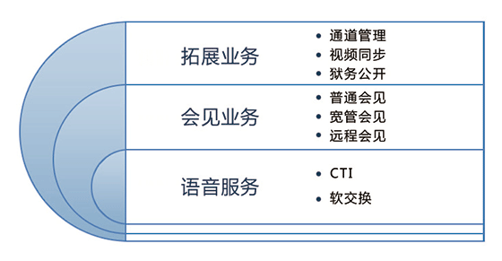

能耗在线监测系统
背景
随着社会转型、经济转轨和城市化进程的加快，人的流动性也越来越强。大量人员流向城市。2013年，杭州市登记在册流动人口突破400万，且近三年来，在杭流动人口平均年增幅超过10%。大量流动人口的涌入，不仅为杭州城市建设、经济发展做出了重大贡献，也给城市管理带来了巨大压力。特别是现阶段的反恐形势越来越严峻。杭州市流动人口服务管理委员会办公室依据《杭州市流动人口服务管理条例》、《市委办公厅、市政府办公厅关于市社会治安综合治理委员会更名为市社会管理综合治理委员会的通知》、《杭州市人民政府办公厅关于组织申报杭州市2013年政府系统政府投资信息化建设项目的通知》、《关于印发“智慧杭州”建设总体规划(2012-2015)的通知》等条例和文件要求，提出了“流动人口居所出入服务管理系统”的建设需求，并于2013年制订了《杭州市流动人口信息 居所出入服务管理系统建设规范》（DB3301）。 本项目依据上述杭州市标准，在流动人口居所出入服务管理系统的建设中将刷卡门禁系统和指纹识别门禁系统相结合，取长补短，并使用无线数据传输功能将刷卡人员的身份信息和出入信息远程传输到监控服务器并实时记录，同时配合使用摄像等监控功能以提高对其身份信息识别和记录的准确度，实现对流动人员 “静态数据+动态信息”的采集，从而增强居所管理的安全，减轻服务人员的负担，同时提供大数据分析和挖掘等功能。
系统框架

系统特点
显示特定人群的统计信息
显示终端门锁的报警统计信息
根据姓名、身份证等查找人员居住历史信息，支持模糊查找
查找房屋居住历史信息，支持模糊查找
实时掌握各区域的治安情况，
智能研判，提前掌握高危人员的动向，防患于未然 事后通过数据记录，追踪查证，快速破案
系统价值
（1）社区出入人员信息登记更加准确
（2）社区人员的信息高度共享
（3）社区居所管理更加安全
（4）管理应用更加科学
软交换通信平台
背景
监狱会见室是服刑人员与家属会见的场所，也是监狱机关向社会展示文明执法形象的重要窗口。会见室的日常工作，具有登记工作繁重、身份审核严格、通知联动要求迅速，以及现场管理要求安全等突出特点，为此，迫切需要一套相适应的业务管理系统，支撑起整个工作流程。 华亭科技会见管理系统，是一套以CTI软交换技术为依托，融合多媒体、生物识别、视频存储和RFID技术满足普通会见、宽管会见、远程视频会见和排队取号等各种业务应用需求的综合会见管理系统。公司经过多年的产品创新和业务拓展，会见管理系统无论是从功能完备性，还是系统可靠性等都达到了业内领先的水平。
系统框架

系统特点
基础数据对接，支持从主流狱政厂家调取服刑人员及其亲属信息
会见登记，包括服刑人员信息检索、亲属信息采集、会见亲属设定、窗口排号、凭证打印等功能
会见审批，支持网络审批、短信审批、单级审批和多级审批
会见通知，支持LED自动推送、语音提醒、页面自助检索等多种方式
分级处遇，按业务管理需求，按不同处遇自动设定会见次数、类型、时长
同步录音，系统自动开启录音，支持WAV和MP3格式存储
实时监控，同时支持电话监控和网络监控，具备实时监听、拆线、插话和修改会见时长等功能
录音复听，支持各种条件检索，可标注是否有异常，并填写通话摘要
通道管理，系统有效整合人脸识别、掌纹识别等生物识别技术，强化会见通道安全
系统价值
更高的可用性，系统可加载应急通信模块，在网络中断，或服务器宕机时，可通过一键切换到应急通信模式继续会见
更完整的会见存档信息，系统与视频监控系统集成，做到会见过程不仅可以监听，还可视频监视
最灵活的窗口排号功能，系统提供多种窗口分配方式，可以自动分配、手动分配、预分配、后分配
会见方式多样，适合各种不同的会见需求，目前系统支持普通会见、宽管会见、远程视频
性能稳定，从2005年至今，已有200多个会见室在稳定使用
解决方案完备，是目前国内客户案例最多的一流产品
狱情分析系统
背景
狱情信息的收集、分析、研判和处置是监狱管理工作中最基础、最基本、最细密的一项内容，左右着监管改造工作中所采取的方法、措施和决策，决定并影响着监管改造安全稳定工作。 狱情动态分析系统：以罪犯个体信息为原点，整合监狱各业务子系统的数据，建立针对罪犯个体的评估模型。以罪犯实时发生的各类事件为计分要素，实现对罪犯危险等级和整体犯情趋势的预判预警，及时采取应对或预防措施，保障监管改造工作的安全稳定。
系统框架

系统特点

系统价值
为基层民警减负
快速便捷的鼠标点击选择的信息手工录入模式
系统自动从如会见、电话、大帐等其他业务同步相关罪犯信息
自动生成报表台账
信息共享：打破信息孤岛，将罪犯相关的个体信息进行卡片汇总和共享
管理监督透明化：对各犯情处置过程、时间、处置人进行透明化监督管控
亲情电话系统
背景
亲情电话作为监狱信息化管理和人性化管理的一种重要途径，是现在监狱亲情帮教和实施人性化管理不可缺少的一项重要内容。
华亭科技亲情电话系统采用B/S构架，包括以下功能：呼叫控制功能、设置功能、状态监控、计费功能、录音管理功能、卡信息管理功能、数据查询统计功能。系统采用稳定可靠的平台，基于成熟的CTI技术和RFID技术软交换实现。具有控制灵活、设置丰富、监控实时、与实际业务流程契合度高、数据记录详尽全面、系统稳定可靠等诸多特点。已为全国300多家监狱建设了安全方便、稳定可靠的亲情电话系统。
系统框架

系统特点
基础数据对接，支持从主流狱政厂家调取服刑人员信息
亲情号码限制，系统只允许拨打经过审核的号码，一个服刑人员最多可有9个号码
拨打便捷，系统会自动播报亲情号码清单，无需输入完整号码，仅需选择号码序号实现拨打
号码管理，支持亲情号码的网络申请、审批，也可批量导入已审核的号码
分级处遇，按业务管理需求，按不同处遇自动设定每个月的拨打次数和每次通话时长
同步录音，系统自动开启录音，支持WAV和MP3格式存储
实时监控，同时支持电话监控和网络监控，具备实时监听、拆线和插话等功能
录音复听，支持各种条件检索，可标注是否有异常，并填写通话摘要
自主实时计费，系统具有费率设定功能，可按通话类型设置通话费用
接入灵活，系统支持数字中继，7号信令等多种方式
系统价值
系统自动化程度，有效降低劳动，规范管理
智能化线路选择，确保系统电话线路的通畅，方便拨打电话
随时监听、复听电话，有利于更好的了解服刑人员、改造服刑人员
强大的系统兼容性，节约建设成本
可实时监听正在通话的电话，并可随时拆线
为服刑人员架起亲情桥梁，促进改造